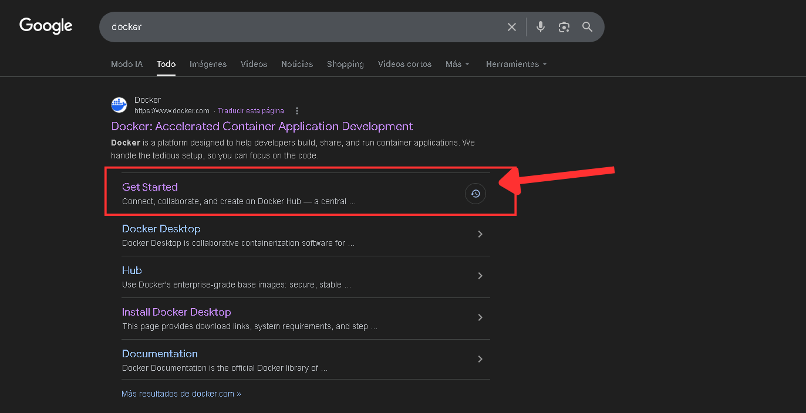
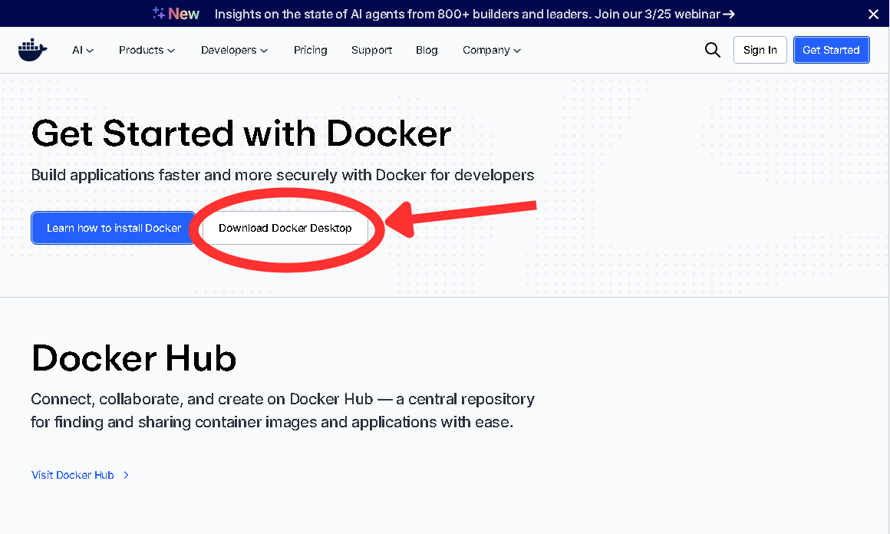
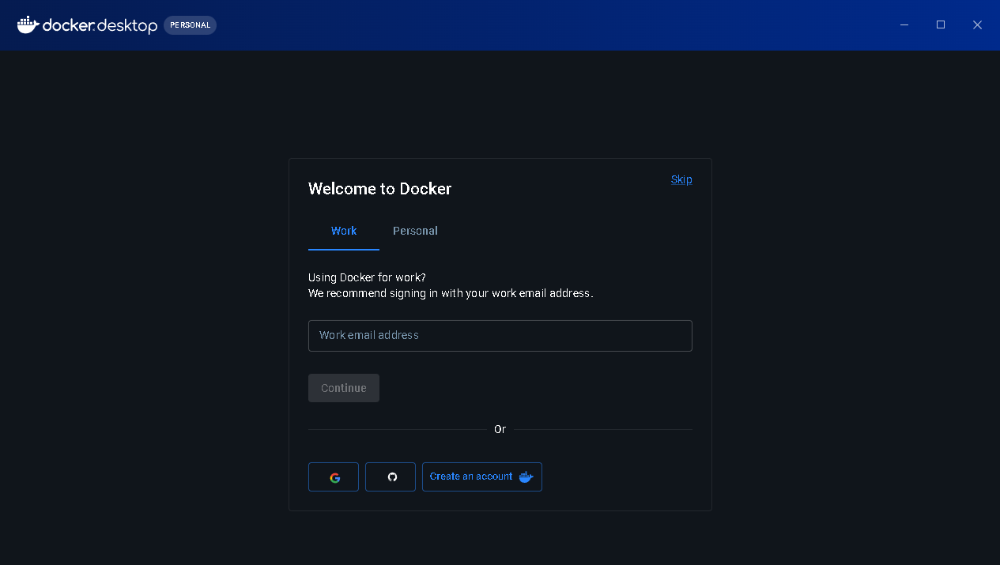
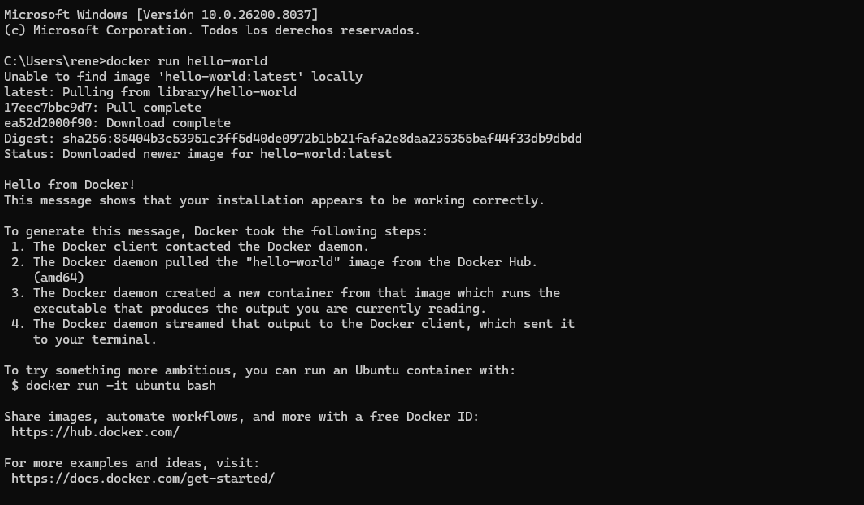
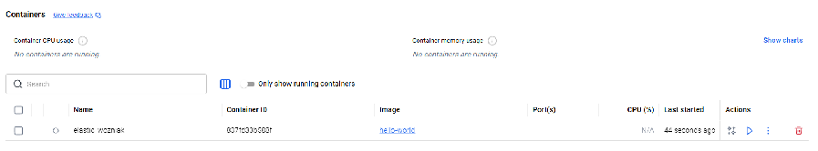
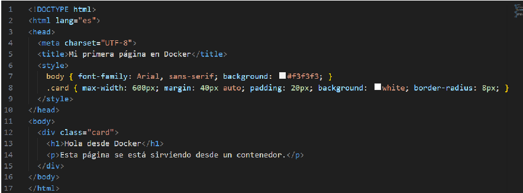
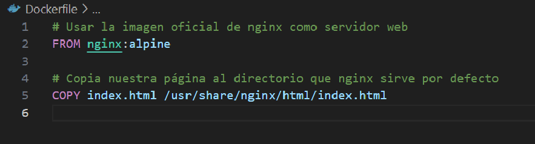
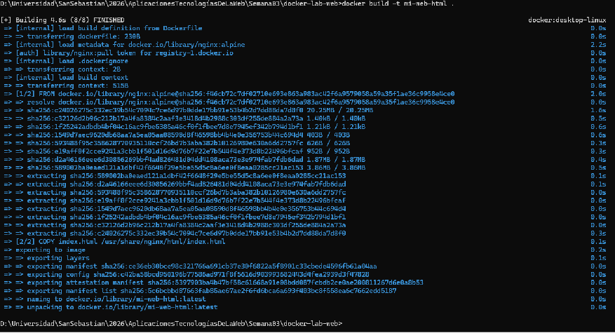
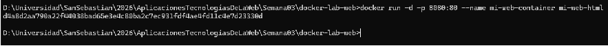
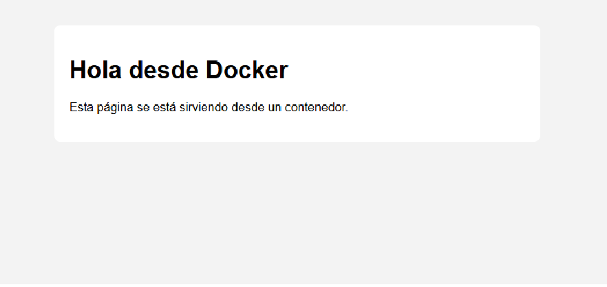

Tutorial: instalar Docker en Windows

1.Descargar Docker Desktop
- Abrir un navegador y entrar a: https://www.docker.com/get-started/
- Buscar el botón “Download Docker Desktop” y descargar el archivo Docker para tu sistema operativo


2.Instalar Docker Desktop
- Ejecutar Docker Desktop Installer.exe.
- En el asistente de instalación, aceptar los términos y dejar la opción por defecto de usar WSL 2 (si aparece).
- Pulsar Next / Install hasta finalizar.
- Al terminar, pulsar Close y reiniciar el equipo si el instalador lo solicita.
-

3.Primer arranque y prueba rápida
- Abrir Docker Desktop desde el menú Inicio.
- Esperar hasta que aparezca el estado como Running (suele mostrar un ícono de ballena activa en la bandeja).
-

- Abrir Terminal o PowerShell y ejecutar “docker run hello-world"
- La primera vez descargará la imagen hello-world desde Docker Hub y luego mostrará un mensaje explicando que Docker se ejecutó correctamente.


Tutorial: primer contenedor web sencillo
Crear carpeta del proyecto
- Crear una carpeta, por ejemplo: C:\docker-lab-web.
- Dentro, crear un archivo index.html con una página muy simple, por ejemplo:
-

- Crear un Dockerfile sencillo, en la misma carpeta C:\docker-lab-web, crear un archivo llamado Dockerfile (sin extensión) con el siguiente contenido:
-

- Construir la imagen, en PowerShell o cmd, ir a la carpeta del proyecto y luego escribe “docker build -t mi-web-html .”
- Esto descargará la imagen base nginx:alpine (si no está) y generará una imagen propia.

- Ejecutar el contenedor publicando el puerto 80 del contenedor al 8080 del host, para ello usa docker run -d -p 8080:80 --name mi-web-container mi-web-html
-

- -d: modo “detached” (en segundo plano).
- -p 8080:80: mapear puerto 8080 de tu PC al 80 del contenedor.
- Abrir el navegador usando //localhost:8080, deberías ver tu página index.html servida desde el contenedor.
- Para detener el contenedor puedes usar stop mi-web-container y para eliminarlo rm mi-web-container
